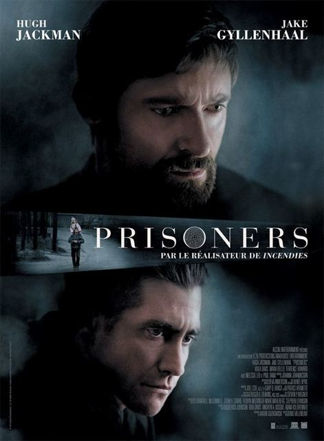
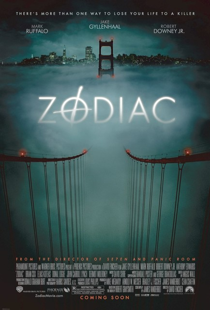
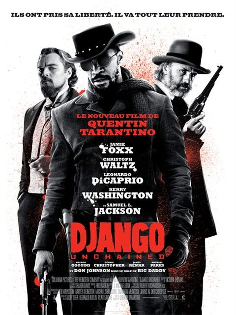

After 3 years as commercial in the office markets, I got bored and launched Le Wagon. Our mission: bring technical skills to creative people.
See for yourself|  |
2013 - PrisonersIn Pennsylvania, six-year-old girls Anna and Joy have disappeared. Detective Loki favors the continuation of the abduction of Keller, Anna's father. The suspect number one is quickly arrested but is released a few days later, for lack of evidence, with the fury of Keller. Blinded by his pain, the devastated father then launches into a race against the clock to find the missing children. |
|  |
2007 - ZodiacZodiac, the elusive serial killer who raged in the late 1960s and spread terror in the San Francisco area, was the Jack the Ripper of America. Produced in encrypted messages, he sowed clues like so many white pebbles, and took pleasure in taunting the press and the police. Robert Graysmith, a young and shy cartoonist, launched his body and soul into what would become the investigation of his life. |
|  |
2012 - DjangoA former slave joins forces with a bounty hunter of German origin who released him: he agrees to hunt with him wanted criminals. In exchange, he will help her find her long lost wife and slave herself too. A crazy western. |